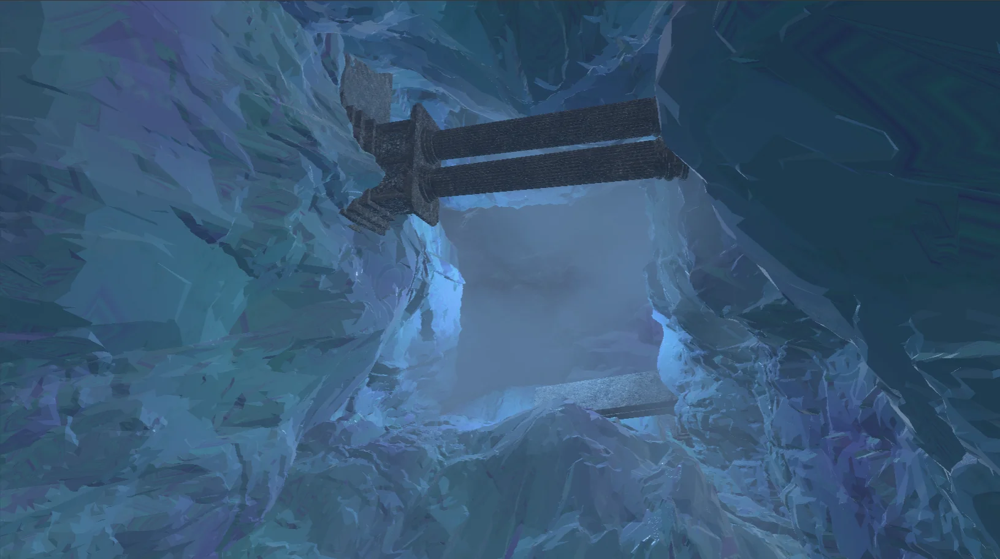

Overview
For BUAS Y2 block C,
We were tasked to make a cross platform game engine for PC and PS5
I was responsible for rendering on both platforms,
as the only graphics programmer
in a
team of 6 other engine programmers.
We then had to use this engine in a cross discipline team to make a game.
